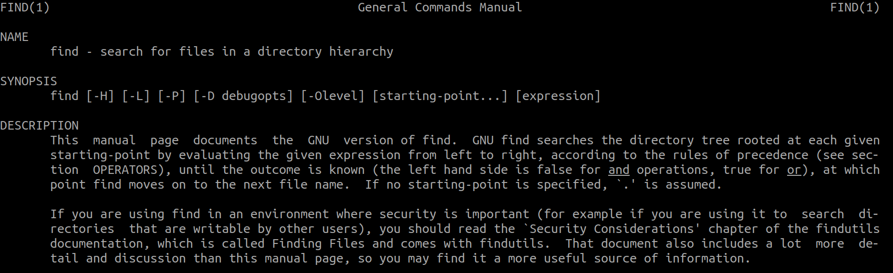

1. Introducción
Durante nuestro día a día puede llegar el momento en el que necesitos buscar elementos sobre nuestro sistema de archivos en GNU/Linux. Si bien es cierto que existen diferentes comandos, como which, whereis o locate, en este documento repasaremos brevemente el comando find.
2. El comando find
El comando find es muy importante ya que dispone de varias opciones para poder afinar la búsqueda de aquello que buscamos.A continuación veremos varias de dichas opciones y ejemplos de uso junto a su explicación.
Lo primer que debemos recordar es que para acceder a la ayuda, usaremos el comando man.
$ man find
y obtendremos lo mostrado en la siguiente imagen.

2.1 Opciones del comando find
La sintaxis del comando será
$ find ruta opciones [ok|exec {}] \;
Partiendo de la siguiente estructura de directorios realizaremos algunos ejemplos para explicar algunas de las opciones del comando.
\begin{center} \includegraphics[width=200pt,height=200pt]{img/02.png} \end{center}
type
La opción type nos sirve para indicar si queremos buscar ficheros, directorios, enlaces, bloques, etc. A continuación algunos ejemplos.
$ find . -type f # Búsqueda de ficheros regulares.
$ find . -type d # Búsqueda de directorios.
$ find . -type l # Búsqueda de enlaces simbólicos o blandos.
$ find . \( -type f -o -type d \) # Búsqueda de ficheros regulares y directorios.
name
La opción name nos permite definir el nombre o un patrón para el nombre de aquellos ficheros que estamos buscando en nuestro sistema de archivos.
$ find . -name 'prueba.txt' # Busca fichero que tengan ese nombre.
$ find . -name '*.txt' # Busca ficheros que tengan extensión txt.
$ find . -name 'prueba.*' # Busca ficheros que se llamen prueba.
$ find . \( -name '*.txt' -o -name 'prueba.*' \) # Busca fichero que tengan extensión
txt o se llamen prueba con cualquier extensión.
size
La opción size nos permite definir la capacidad que ocupa el fichero que buscamos. A continuación algunos ejemplos.
perm
La opción perm nos permite definir los permisos de aquel fichero que estamos buscando. A continuación algunos ejemplos.
mtime
user
La opción user nos permite definir el usuario propietario de aquellos ficheros que estamos buscando. A continuación algunos ejemplos.
maxdepth
La opción maxdepth nos permite definir el nivel máximo de niveles a los que queremos que acceda la herramienta find a buscar. A continuación algunos ejemplos.
empty
La opción empty nos permite definir que la busqueda se refiere a un elemento vacío.
$ find . empty # Busca ficheros que estén vacíos.
link
mmin
ok
exec
2.2 Combinar varias opciones
Para llevar a cabo la combinación de varias opciones debemos hacer uso de -and (Y) y -or (OR). A continuación se muestran algunos ejemplos de ejecución.
$ find . \( -type f -o -type d \) -and \( -name 'prueba.txt' -or -name '*.jpg' \)
# Se buscará ficheros regulares y directorios que
# tengan por nombre prueba.txt o cualquier nombre pero extensión jpg.
$ find . -type f \( -name '*.txt -or -name'*.pdf \) -and \( -size +2M -and
-size -5M \)
# Se buscará ficheros regulares cuyo nombre tenga
# extensión txt o pdf y el tamaño usado en disco esté comprendido entre 2MB y 5MB.
3. Actividades
A continuación se debe crear un comando find que cumpla lo que se indica para cada caso:
- Muestra los ficheros regulares que hay en el directorio home de tu usuario.
- Muestra los directorios que hay en el directorio home de tu usuario.
- Muestra los ficheros y los directorios que hay en el directorio home de tu usuario.
- Muestra los ficheros regulares que tengan por nombre info.txt
- Muestra los ficheros regulares que tengan por nombre info con cualquier extensión.
- Muestra los ficheros regulares que estén vacíos.
- Muestra los directorios que estén vacíos.
- Muestra los directorios cuyo nombre sea pruebas.
- Muestra los ficheros cuyo nombre sea alberto.txt o claves.pdf.
- Muestra los ficheros cuyo nombre tenga extensión txt o pdf.
- Muestra los ficheros que ocupen más de 1MB.
- Muestra los ficheros que ocupen más de 1MB y menos de 4MB.
- Muestra los ficheros cuyo nombre tenga extensión txt o pdf y además estén entre el rango de 10MB y 50MB.
- Muestra los enlaces duros
- Muestra los ficheros que tengan permisos de ejecutar.
- Elimina los ficheros txt.
- Elimina los directorios vacíos.
- Copia los ficheros jpg a un directorio llamado backup que debe screar antes.
- Haz una búsqueda de ficheros mp3 con un máximo de dos niveles de profundidad.
- Repite la anterior añdiendo un filtro de menores de 3MB.
- Muestra los ficheros que han sido modificados hace menos de cuatro días.